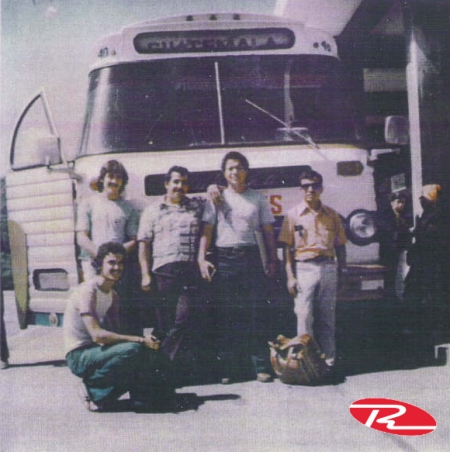
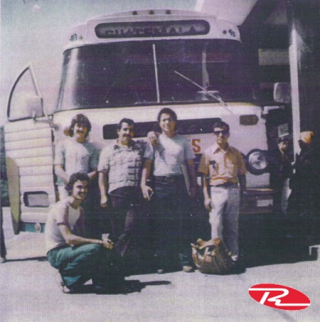

Historia de los Transportes Internacionales Contreras Asociados "Tica Bus"
Tica Bus es una empresa de transporte terrestre que ha sido fundamental en la conexión de Centroamérica desde su fundación en 1963.
Comenzó como un negocio familiar por la familia Contreras (Guatemaltecos) y la familia Salazar (Costarricenses) y con el tiempo, se consolidó como líder en el transporte internacional en la región. En 1975, logró el control completo del transporte internacional en la zona, expandiendo sus rutas y mejorando sus servicios.
Sin embargo, en los años 80, la empresa enfrentó dificultades debido a los conflictos políticos en Centroamérica, lo que la obligó a reducir sus operaciones y limitarse a la ruta Costa Rica - Panamá. Tras una crisis de aproximadamente 8 años, Tica Bus logró reabrir rutas y expandir nuevamente su cobertura a toda Centroamérica.
Expansión y modernización
Con el paso de los años, la empresa ha invertido en tecnología y modernización de su flota, adquiriendo autobuses de última generación con comodidades como Wi-Fi, entretenimiento a bordo y sistemas de seguridad avanzados.
Además, ha construido terminales estratégicas en varias ciudades, facilitando a los viajeros una experiencia más cómoda y eficiente.
Compromiso con la calidad
Hoy en día, Tica Bus sigue apostando por un servicio de calidad, seguro y confiable, conectando ciudades en Guatemala, Honduras, El Salvador, Nicaragua, Costa Rica y Panamá.
 
